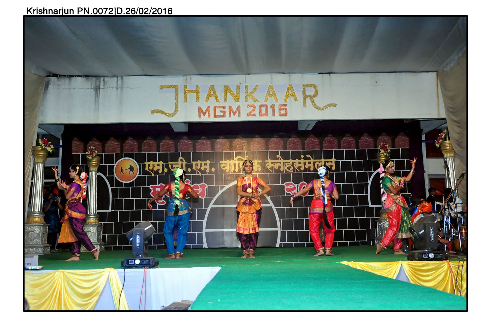
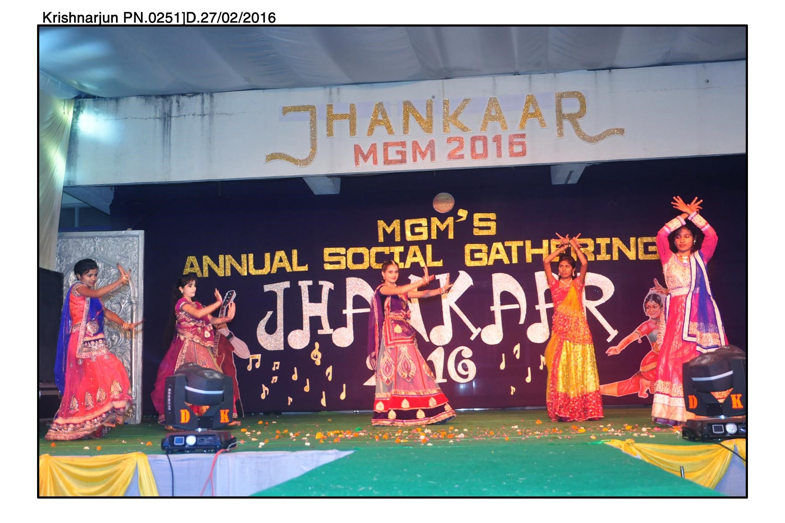
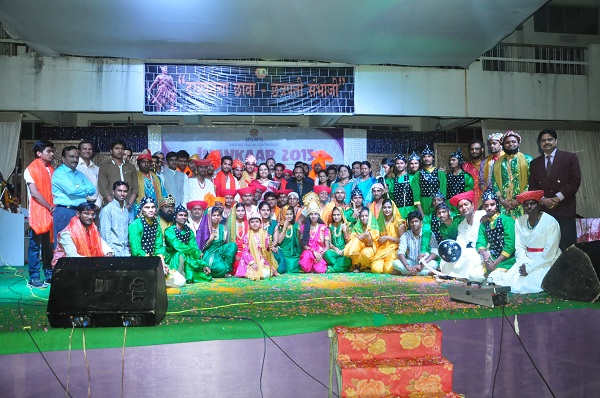
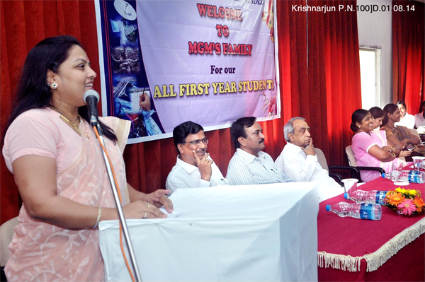
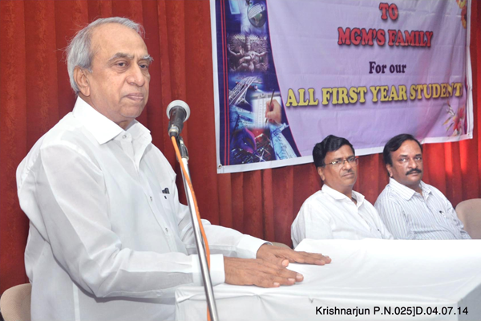
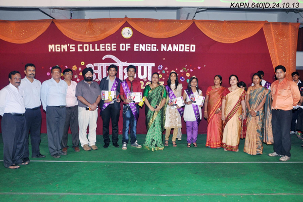

A college is marked by its several events which include its annual social gathering. Every year we celebrate annual social gathering of M.G.M’s College of Polytechnic in the name of Jhankaar. The Name Jhankaar was given by the first batch of the college in 1984. Every year, Jhankaar has reached to its highest level of success. Jhankaar is 3-day’s college festival which includes host of events where students are provided a platform to think, step forward and showcase their hidden skills and talent. These events have their own color and they are very splendid in their own.
  M.G. M’s College of Polytechnic has a tradition to have a grand welcome for the first year students. This celebration is known as Aarohan. Intention behind organizing Aarohan is to make the fresher’s feel at home and provide them friendly ambience in college. Also it aims at strengthening relationship among the new comers and old students.Aarohan is basically to encourage the first year students in cultural activities such as dance, singing drama, Mr. and Ms. Fresher. Mr. and Ms. Fresher competition of Aarohan includes group discussion, personal interview, introduction round, Cultural round and finally question and answer round. These different rounds supports in selecting a versatile personality as Mr. and Ms. Fresher for the year.
  